|
|
|
|
|Instituto Tecnológico de Costa Rica|Escuela de Matemática| M. Sc. Geovanni Figueroa M. |
|
|
Ecuación de Bernoulli
Algunas veces al hacer un cambio de variable se logra transformar una ecuación diferencial en lineal, como el ejemplo anterior. Otro situación semejante se presenta para la ecuación de Bernoulli.
Observación: cuando 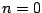 la ecuación de Bernoulli se reduce a
una ecuación separable y cuando
Demostración: Al dividir la ecuación 1.12 por 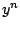, resulta
Usando la regla de la cadena, calculemos
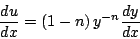
Sustituyendo en la ecuación 1.13, esta se transforma en
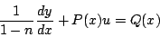
la cual es una ecuación diferencial lineal de primer orden, como se quería.
Ejemplo:
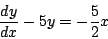
Solución
Ésta es una ecuación de Bernoulli con 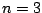, 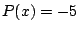 y 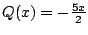. Para resolverla primero dividamos por 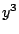
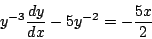
Ahora efectuemos la transformación 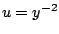. Puesto que 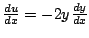, la ecuación se transforma en
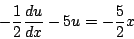
Simplificando obtenemos la ecuación lineal
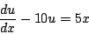
Cuya solución es
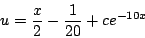
y al sustituir se obtiene la solución de la ecuación original
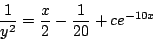
Observación: en esta solución no está incluida la solución
Ejemplo:
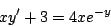
se transforma en una ecuación de Bernoulli al hacer 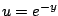.
Solución
Como
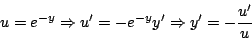
Sustituyendo obtenemos
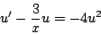
la cual es una ecuación de Bernoulli.
Subsecciones
|